קאפיטל 12
קליימעט קאנטראל
זייטן 198–208 אינעם PDF
ווי דער סיסטעם ארבעט
יעדער CR-V קומט מיט אויטאמאטישע קליימעט קאנטראל. דער LX האט א single-zone סיסטעם (איין זאנע פאר'ן גאנצן קאר(. דער EX און די העכערע מאדעלן, אריינגערעכנט אייערער, האבן dual-zone)צוויי זאנעס) אויטאמאטישע קליימעט קאנטראל, מיט באזונדערע טעמפעראטור-קאנטראלן פאר לינקס און רעכטס. דער דרייווער און דער פארנטיגער פאסאזשיר קענען יעדער שטעלן אן אנדערע טעמפעראטור פאר זיין זייט פונעם קאר, אדער מען קען ניצן איין טעמפעראטור פאר אלעמען. די קאנטראלן געפינען זיך אין מיטן פונעם דעשבארד, אונטער דעם 9-אינטש טאטש-סקרין.
דער אונער'ס מאנואל פאסט צוזאם דעם געדאנק אין צוויי זאצן. דער אויטאמאטישער סיסטעם האלט די אינעווייניגע טעמפעראטור וואס איר קלייבט אויס. ער קלייבט אויך די ריכטיגע מישונג פון ווארעמע אדער קאלטע לופט, כדי צו ברענגען דעם קאר צו יענער טעמפעראטור אזוי שנעל ווי מעגליך. איר קלייבט א נומער, און דער קאר באשליסט ווי אזוי אהינצוקומען און עס צו האלטן. דער מאנואל זאגט אויך אז מען זאל ניצן דעם סיסטעם נאר ווען דער מאטאר לויפט.

לויט Honda'ס feature guide, ניצט דער dual-zone סיסטעם פונעם Sport Touring Hybrid אויך GPS כדי צו וויסן וואו דער קאר שטייט לגבי דער זון. אייער EX האט נישט די פונקציע.
טעגליכע באנוץ
ווי אזוי ניצן די אויטאמאטישע קליימעט קאנטראל
- צינדט אן דעם מאטאר.
- דריקט דעם AUTO קנעפל (אויטאמאטישער מאדָע).
- שטעלט די טעמפעראטור מיט'ן טעמפעראטור-ראדל אויף דער דרייווער'ס זייט אדער אויף דער פאסאזשיר'ס זייט.
- כדי אויסצולעשן, דריקט דעם ON/OFF קנעפל (אן/ אויס).
פאר רוב אונערס איז דאס אלעס. געפינט א טעמפעראטור וואס איר האט ליב, און לאזט דעם סיסטעם אויף AUTO א גאנץ יאר. אויב איר דרייט א ראדל ביז'ן נידעריגסטן אדער העכסטן עק, ווייזט דער דיספליי Lo אדער Hi אנשטאט א נומער.
איבערנעמען איין פונקציע מיט דער האנט
אויב איר דריקט אן אנדער קנעפל בשעת דער סיסטעם איז אויף AUTO, באקומט די פונקציע פון יענעם קנעפל פארטריט, און דער AUTO אינדיקאטאר לעשט זיך אויס. יעדע פונקציע וואס האט נישט צו טון מיט יענעם קנעפל ווערט נאך אלץ קאנטראלירט אויטאמאטיש. איר קענט טוישן איין זאך מיט דער האנט, אן אויפגעבן די אויטאמאטישע קאנטראל פון די איבריגע. כדי צוריקצוברענגען אלעס צו אויטאמאטישע קאנטראל, דריקט נאכאמאל AUTO.
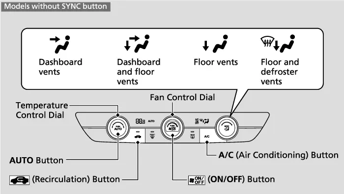
דער ON/OFF קנעפל
דער ON/OFF קנעפל (אן/ אויס) צינדט אן און לעשט אויס דעם גאנצן קליימעט סיסטעם. ווען איר צינדט אים צוריק אן, קערט זיך דער סיסטעם צוריק צו אייער לעצטע איינשטעלונג, אזוי אז אויסלעשן מעקט קיינמאל נישט אויס אייערע סעטינגס.
דער טייל פונעם מאנואל וואס איז גענוצט געווארן פאר דעם קאפיטל רעדט וועגן AUTO, ON/OFF, די טעמפעראטור-ראדלעך, ריסירקולאציע, דעם windshield defroster, דעם rear defogger און SYNC. ער באשרייבט נישט באזונדערע קנעפלען פאר פען-גיכקייט, לופט-ריכטונג אדער A/C, דעריבער פרובירט דאס בוך נישט צו טרעפן ווי זיי ארבעטן. וואס איר דריקט נאר מיט דער האנט באקומט פארטריט איבער AUTO, ווי אויבן באשריבן.
פרישע לופט און ריסירקולאציע
דער ריסירקולאציע קנעפל קלייבט פון וואו די לופט קומט. דריקט אים כדי צו וועקסלען צווישן די צוויי מאדָעס.
לופט-קוואל מאדָעס
| מאדָע | אינדיקאטאר | וואס עס טוט | ווען צו ניצן |
|---|---|---|---|
| ריסירקולאציע | אן | דרייט ארום די אינעווייניגע לופט דורכן סיסטעם | נאר אויף קורץ, למשל צו שנעל אפקילן |
| פרישע לופט | אויס | ברענגט כסדר אריין לופט פון דרויסן | נארמאל דרייוון |
דער מאנואל'ס עצה איז קלאר: האלט דעם סיסטעם אויף פרישע לופט אין נארמאלע מצבים. מענטשן אטעמען ארויס נעץ, און נאסע מאנטלען לייגן צו נאך אין רעגנדיגע וועטער. אין ריסירקולאציע מאדָע בלייבט די פייכטע לופט אינעווייניג, און די פענצטער קענען ווערן פארנעפלט און פארמינערן אייער זעאונג. אין טעגליכן דרייוון, בפרט אין רעגן און ווינטער, לאזט דעם ריסירקולאציע אינדיקאטאר אויסגעלאשן. מער וועגן דרייוון אין אזעלכע מצבים, זעט קאפיטל 24.
שנעל אפקילן אויף א הייסן טאג
דער מאנואל גיט אן אפיציעלן אופן ווי אזוי אפצוקילן א קאר וואס איז געשטאנען אין דער זון. עס איז אסאך שנעלער ווי ווארטן מיט פארמאכטע פענצטער.
שנעל אפקילן
- עפנט אביסל די פענצטער כדי די הייסטע לופט זאל קענען ארויסגיין.
- צינדט אן דעם סיסטעם אויף AUTO און שטעלט די טעמפעראטור נידעריג.
- וועקסלט פון פרישע לופט צו ריסירקולאציע ביז דער קאר קילט זיך אפ.
- ווען עס פילט זיך שוין באקוועם אינעווייניג, פארמאכט די פענצטער.
- וועקסלט צוריק צו פרישע לופט און שטעלט צוריק אייער נארמאלע טעמפעראטור.
אפרייניגן די שויב און די פענצטער
Windshield Defroster
ווען מען דריקט דעם windshield defroster קנעפל (דער אפטוי-קנעפל פאר דער פארנטיגער שויב), צינדט זיך אן די A/C, און דער סיסטעם וועקסלט אויטאמאטיש צו פרישע לופט. די A/C טרוקנט אויס די לופט, און טרוקענע לופט רייניגט שנעל אפ דעם נעפל, אפילו אין ווינטער. דריקט נאכאמאל דעם קנעפל כדי אויסצולעשן, און דער סיסטעם קערט זיך צוריק צו אייערע פריערדיגע סעטינגס. אויב איר דריקט דעם defroster קנעפל בשעת דער מאטאר איז אפגעשטעלט דורך Auto Idle Stop (דער אויטאמאטישער אפשטעל ביים שטיין), הייבט זיך דער מאטאר אויטאמאטיש צוריק אן.
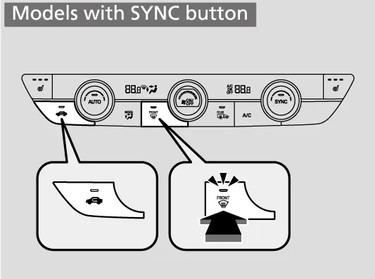
בשעת'ן אפטויען, שטעלט נישט די טעמפעראטור נאענט צום העכסטן אדער נידעריגסטן עק. ווען קאלטע לופט שלאגט אן די שויב, קען די דרויסנדיגע זייט פונעם גלאז ווערן פארנעפלט, ווייל דאס אפגעקילטע גלאז זאמלט נעץ פון דער פייכטער לופט דרויסן. ווייפערס און Smart Clear Wiper ווערן באשריבן אין קאפיטל 10.
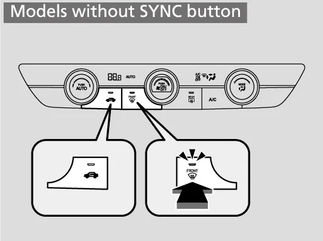
שנעל אפטויען
דער מאנואל'ס פראצעדור "To rapidly defrost the windows" (שנעל אפטויען די פענצטער) האט צוויי טריט. דריקט דעם ערשטן קנעפל וואס ווערט געוויזן אין בילד פונעם מאנואל, דערנאך דריקט דעם צווייטן. ביידע קנעפלען זענען אויף אייער קליימעט פאנעל.
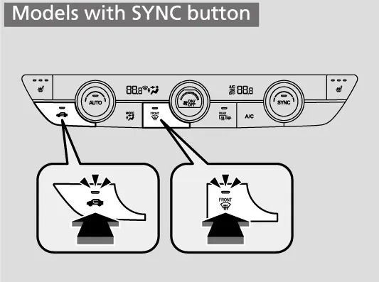
Rear Defogger און געהייצטע שפיגלען
דער rear defogger קנעפל (דער הייצער פאר דער הינטערשטער שויב) הייצט די דינע ליניעס אין הינטערשטן פענצטער. Honda'ס ספעציפיקאציעס רעכענען אויס געהייצטע זייט-שפיגלען פאר'ן EX, דעריבער הייצט דער זעלבער קנעפל אויף אייער קאר אויך די שפיגלען אויף די טירן. ער ארבעט ווען דער power mode איז אויף ON. ער לעשט זיך אויס אויטאמאטיש נאך 10 ביז 30 מינוט, לויט דער דרויסנדיגער טעמפעראטור. ביי 32°F (0°C) אדער ווייניגער, לעשט ער זיך נישט אויס אויטאמאטיש.
ביי מאדעלן מיט געהייצטע שפיגלען, ווען דער power mode איז ON און די דרויסנדיגע טעמפעראטור איז אונטער 41°F (5°C), קענען די געהייצטע שפיגלען זיך אויטאמאטיש אנצינדן פאר 10 מינוט. אויף א קאלטן אינדערפרי קענען די שפיגלען ווערן ריין נאך איידער איר רירט עפעס אן. ריינע שפיגלען זענען וויכטיג פאר טוישן ליין, און כדי צו זען די Blind Spot Information אינדיקאטארן וואס זענען אריינגעבויט אין די שפיגלען (קאפיטל 9).
די בלאט וועגן Heated Windshield געהערט נישט צו אייער קאר
דער מאנואל האט א בלאט וועגן דעם Heated Windshield Button (קנעפל פאר א געהייצטע פארנטיגע שויב). יענער סיסטעם טויט אפ דעם ארט וואו די ווייפערס רוען און דעם עק פון דער שויב אויף דער דרייווער'ס זייט, און ער לעשט זיך אויס נאך 15 מינוט. דער בלאט איז באצייכנט נאר פאר קאנאדישע מאדעלן, און אייער אמעריקאנער EX האט נישט די פונקציע. אויף אייער קאר זענען דער windshield defroster און דער rear defogger די כלים צו רייניגן די גלעזער.
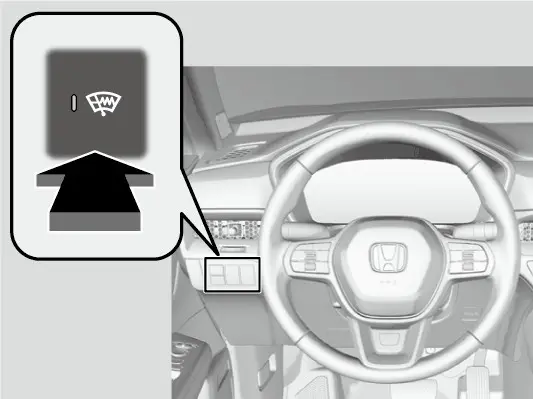
Synchronization Mode (SYNC)
אין dual mode (צוויי-זאנע מאדָע) ווערן די טעמפעראטורן פון דער דרייווער'ס זייט און פון דער פאסאזשיר'ס זייט געשטעלט באזונדער. אין synchronization mode (SYNC, צוזאמגעבונדענע מאדָע) גייען ביידע זייטן נאך איין איינשטעלונג. SYNC איז באקוועם ווען איר פארט אליין, ווייל דאן קאנטראלירט איין ראדל דעם גאנצן קאר.
ווי אזוי ניצן SYNC
- דריקט דעם SYNC קנעפל. דער סיסטעם וועקסלט צו synchronization mode.
- שטעלט די טעמפעראטור מיט'ן ראדל אויף דער דרייווער'ס זייט. ביידע זייטן גייען נאך.
- כדי צוריקצוגיין צו dual mode, דריקט נאכאמאל SYNC אדער דרייט דאס ראדל אויף דער פאסאזשיר'ס זייט.
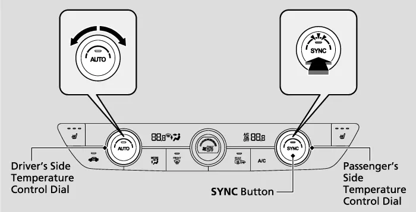
קליימעט קאנטראל סענסארס
AUTO ארבעט גוט נאר ווייל ער מעסט די מצבים אינעווייניג אין קאר. דער מאנואל שרייבט אז דער סיסטעם האט סענסארס, און גיט איין פעסטן כלל: צודעקט זיי נישט און גיסט נישט קיין שום פליסיגקייט אויף זיי. Honda'ס ספעציפיקאציעס רעכענען אויך אויס א פייכטקייט-סענסאר פאר'ן EX. דער טייל פונעם מאנואל נענט נישט דעם סארט פון יעדן סענסאר, דעריבער רעכנט דאס בוך אויס נאר וואס די אפיציעלע מקורות באשטעטיגן.
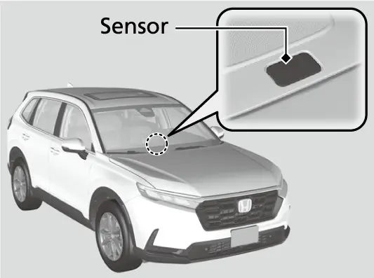
א צוגעדעקטער סענסאר מעסט די אומריכטיגע מצבים, און AUTO מאכט דאן אומריכטיגע באשלוסן. עס קען ווערן צו ווארעם אדער צו קיל אינעווייניג, אדער דער פען קען זיך אויפפירן מאדנע. האלט פאפירן, פארקינג פערמיטס, שמאטעס און טעלעפאן-האלטערס אוועק פון די סענסאר ערטער. ווען איר רייניגט דעם דעשבארד, שפריצט נישט קיין פליסיגקייט גלייך אויף זיי.
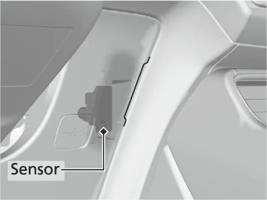
ווי עס ארבעט צוזאמען מיט Idle-Stop און ECON
Auto Idle Stop
Idle-Stop (דער אויטאמאטישער מאטאר-אפשטעל ביים שטיין) ווערט באשריבן אין קאפיטל 3. בשעת אן idle stop שטעלט זיך אפ די A/C, און נאר דער בלאוער לויפט ווייטער. אויף א זייער הייסן טאג קען די לופט ווערן ווארעמער ביי א לאנגע רויטע ליכט. אויב איר ווילט נישט אז די A/C זאל זיך אפשטעלן, דריקט דעם Auto Idle Stop OFF קנעפל כדי אויסצולעשן Idle-Stop. די אינדיקאטאר-ליסטע פונעם מאנואל האט אויך אן Auto Idle Stop מעלדונג וואס הייסט "Climate control system is prioritized." (דער קליימעט סיסטעם האט פארטריט).


ECON מאדָע
בשעת ECON מאדָע (דער שפאר-מאדָע) איז אקטיוו, קען דער קליימעט קאנטראל סיסטעם קילן שוואכער. ECON גיט אוועק אביסל באקוועמקייט פאר שפארן. אויף א מילדן טאג ארבעטן ECON און AUTO גוט צוזאמען. אויף א זייער הייסן, פייכטן טאג, לעשט אויס ECON אויב עס קילט זיך נישט גענוג אינעווייניג. דער מאנואל גיט נישט קיין נומער וויפיל בענזין די A/C נוצט. דרייוו מאדָעס ווערן באשריבן אין קאפיטל 14, און בענזין-שפארונג אין קאפיטל 4.

לופט פילטער, ווענטס און A/C סערוויס
Dust and Pollen Filter
אלע לופט וואס קומט אריין גייט דורך דעם dust and pollen fli ter (שטויב- און פאלען-פילטער), וואס כאפט פאלען, שטויב און אנדערע שמוץ. Honda'ס feature guide זאגט אז ער קען ארויסנעמען שטיקלעך אזוי קליין ווי אכט מיקראן, בערך 10 מאל קלענער ווי א מענטשליך האר. דער Maintenance Minder (דער סערוויס-דערמאנער(זאגט אייך ווען אים צו טוישן)די קאודס ווערן באשריבן אין קאפיטל Honda .)19 רעקאמענדירט אים צו טוישן פריער אויב איר פארט אין זייער שטויביגע געגנטן. אויב די לופט-שטראם ווערט קענטיג שוואכער און די פענצטער ווערן לייכט פארנעפלט, קען זיין אז מען דארף טוישן דעם פילטער. דער מאנואל זאגט זיך צו ווענדן צו א דילער פאר'ן טוישן.
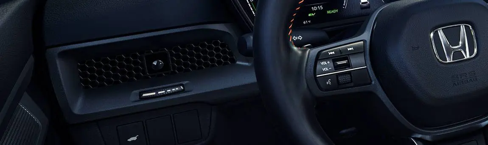
ווענטס
Honda שטעלט לופט-עפענונגען (ווענטס) איבער'ן גאנצן קאר כדי אלע זאלן זיך פילן באקוועם. די פאסאזשירן הינטן האבן זייערע אייגענע ווענטס הינטן אין דער center console. Honda באמערקט אויך אז דער סיסטעם בלייבט שטיל אפילו ווען ער הייצט אדער קילט שנעל דעם קאר.
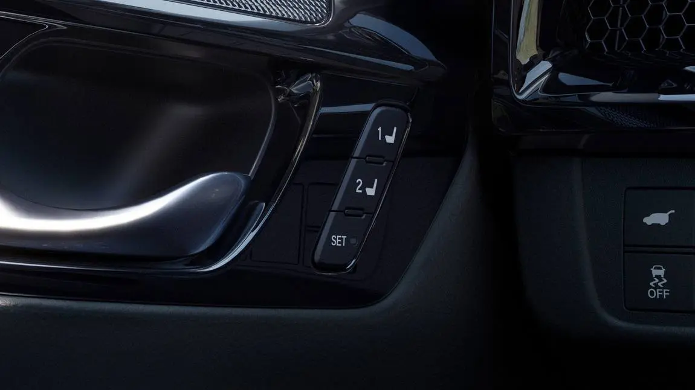
A/C סערוויס
דער לעיבל פון דער A/C געפינט זיך אונטער דער האוד (זעט קאפיטל 19 וואו די לעיבלס געפינען זיך). דער refrigerant (קיל-גאז) אין אייער סיסטעם איז ברענבאר און קען זיך אנצינדן בשעת'ן סערוויס אויב מען פאלגט נישט די ריכטיגע פראצעדורן. ארויסלאזן דעם refrigerant שעדיגט אויך די סביבה.
קיין קליימעט סקרין אויפן טאטש-סקרין
דער טייל פונעם מאנואל ווייזט נישט קיין קליימעט סקרין אויפן 9-אינטש דיספליי. אויף אייער EX טוט מען אלעס אין דעם קאפיטל מיט די פיזישע קנעפלען און ראדלעך.
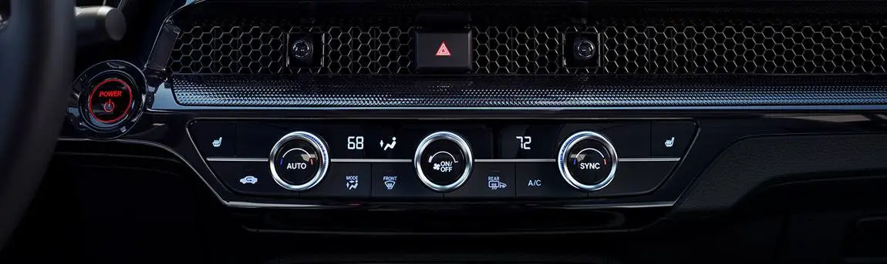
אפט געפרעגטע שאלות
אפטע פראגעס
פראגע: איך האב געדריקט AUTO אויף א פראסטיגן אינדערפרי און כמעט קיין לופט איז נישט ארויסגעקומען. איז דער פען צעבראכן?
ענטפער: ניין. דער פען הייבט אמאל נישט גלייך אן, כדי קאלטע לופט פון דרויסן זאל נישט בלאזן אויף אייך. ער הייבט אן ווען ווארעמערע לופט איז גרייט.
פראגע: לעשט זיך דער rear defogger אלעמאל אליין אויס?
ענטפער: ער לעשט זיך אויס נאך 10 ביז 30 מינוט, לויט דער דרויסנדיגער טעמפעראטור. ביי 32°F (0°C) אדער ווייניגער בלייבט ער אן ביז איר לעשט אים אויס.
פראגע: פארוואס ווערט די לופט ווארעם ביי לאנגע רויטע ליכט?
ענטפער: בשעת אן Auto Idle Stop שטעלט זיך אפ די A/C און נאר דער בלאוער לויפט. דריקט דעם Auto Idle Stop OFF קנעפל אויב איר ווילט כסדר קילן.
פראגע: מיינע שפיגלען האבן זיך אנגעהייצט אן דעם וואס איך האב גארנישט געדריקט. פארוואס?
ענטפער: ווען דער power mode איז ON און עס איז אונטער 41°F (5°C), קענען די געהייצטע שפיגלען זיך אויטאמאטיש אנצינדן פאר 10 מינוט.
פראגע: ווי אזוי גיי איך צוריק פון SYNC צו באזונדערע טעמפעראטורן?
ענטפער: דריקט נאכאמאל SYNC אדער דרייט דאס ראדל אויף דער פאסאזשיר'ס זייט.
הויפט פונקטן
- שטעלט א טעמפעראטור, דריקט AUTO, און לאזט עס אזוי א גאנץ יאר.
- ווען מען דריקט אן אנדער קנעפל, נעמט מען איבער נאר יענע פונקציע; דריקט נאכאמאל AUTO צוריקצוברענגען די פולע אויטאמאטישע קאנטראל.
- האלט פרישע לופט ווי דעם געווענליכן מאדָע, און ניצט ריסירקולאציע נאר אויף קורץ.
- דער windshield defroster צינדט אן די A/C און פרישע לופט כדי שנעל אפצורייניגן דעם נעפל.
- דער rear defogger הייצט אויך די שפיגלען פונעם EX; לעשט אים אויס ווען דאס גלאז איז ריין, כדי צו היטן די באטעריע.
- צודעקט קיינמאל נישט די קליימעט סענסארס און גיסט נישט קיין פליסיגקייט אויף זיי.
- Idle-Stop שטעלט אפ די A/C און ECON קען שוואכן דאס קילן; לעשט אויס איינס פון זיי אויף זייער הייסע טעג.
- טוישט דעם dust and pollen fli ter ווען דער Maintenance Minder הייסט, און פריער אין שטויביגע געגנטן.